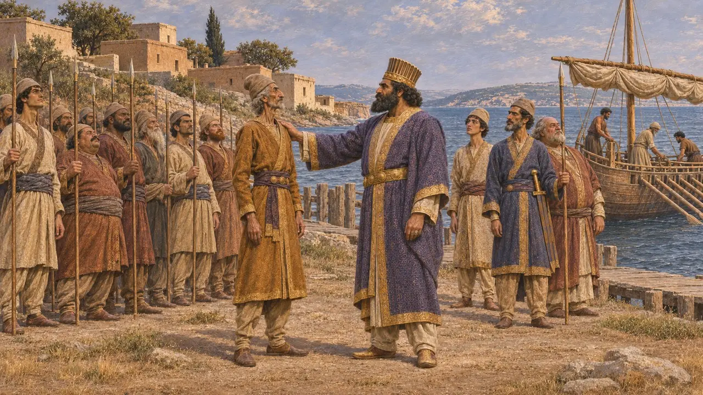
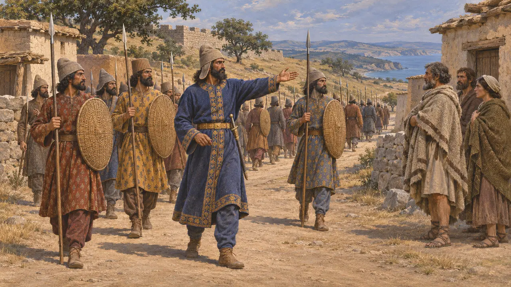
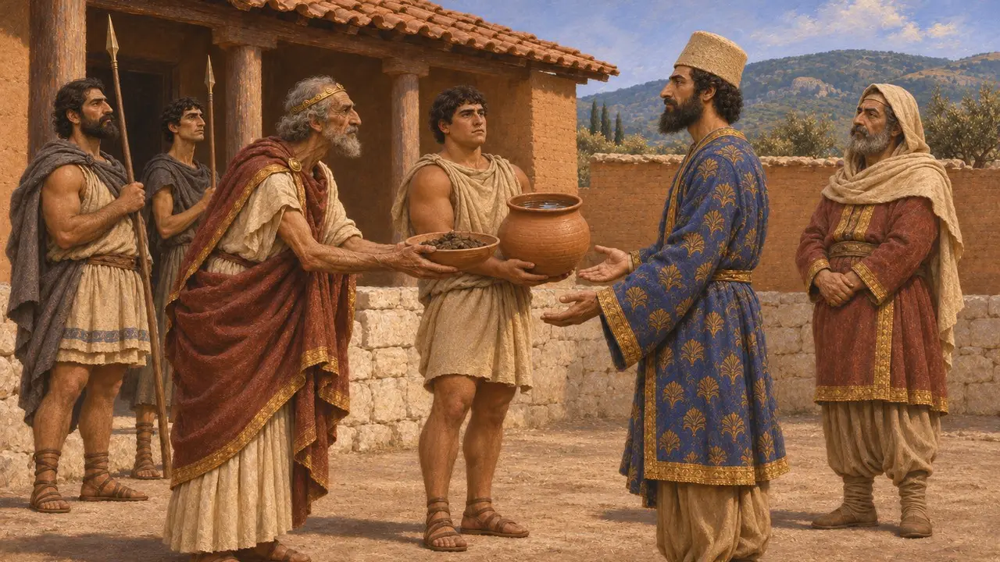
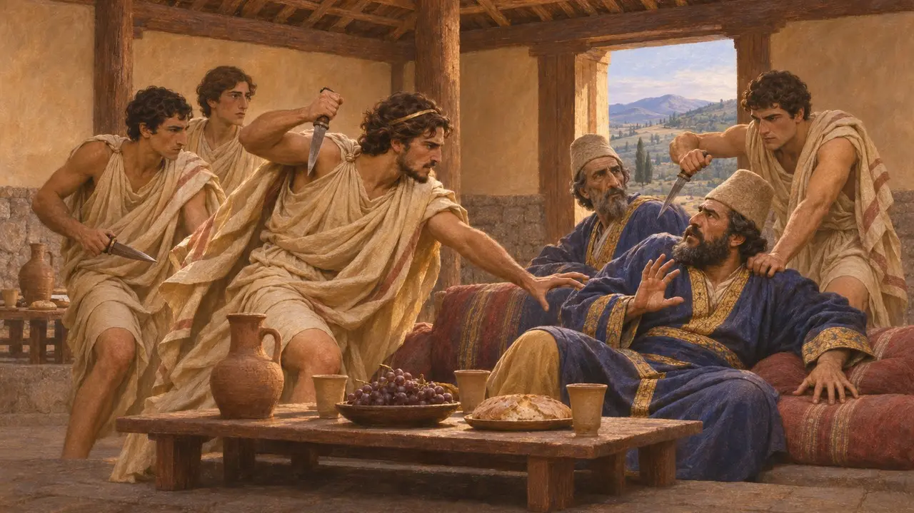
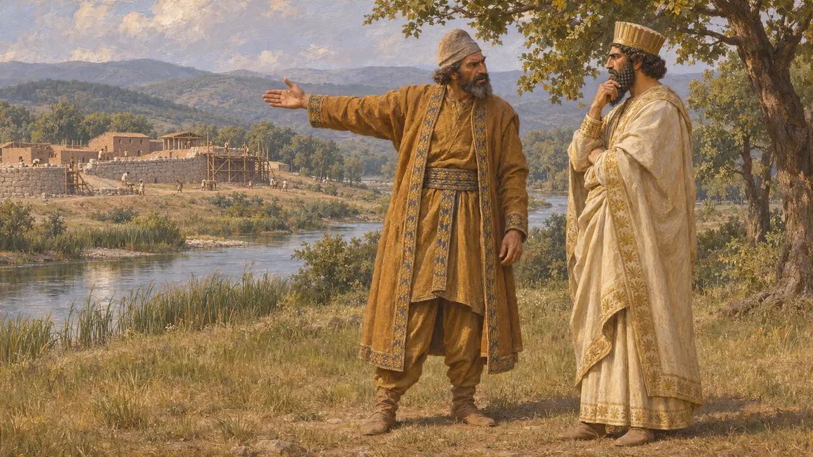
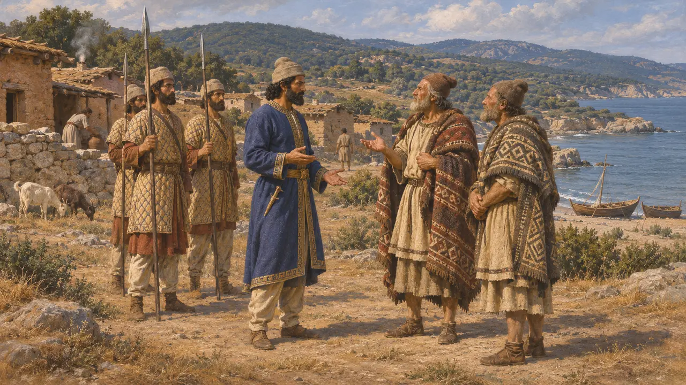

Megabazos
Persischer General in Europa nach dem Skythenfeldzug des Dareios, um 513 v. Chr.
Megabazos war der persische Befehlshaber, den Dareios nach Herodot in Europa zurückließ, als er vom Istros nach Asien zurückkehrte. Herodot schreibt ihm die Unterwerfung Perinthos' und eines großen Teils Thrakiens zu, ebenso die Entsendung von Gesandten nach Makedonien, um Erde und Wasser zu fordern. Sein Wirken trug dazu bei, die persische Reichweite entlang der nördlichen Ägäisküste auszudehnen.
Im Spiel: Megabazos wird in den Ereignisartikeln zum Skythenfeldzug des Dareios und zur Debatte an der Istros-Brücke genannt. Das Spiel gibt ihm weder eine eigene Einheit noch ein Gebäude oder eine Mechanik, und die Geschichte in diesem Eintrag folgt Herodot.

In Europa mit dem Oberbefehl zurückgelassen
Antiker BerichtHerodot berichtet, dass Dareios nach Asien zurückkehrte, Sestos erreichte und Megabazos als Befehlshaber über die Truppen in Europa zurückließ. Er fügt hinzu, dass Dareios Megabazos hoch schätzte. Herodot ist die einzige ausführliche Quelle für diese Ernennung.
Herodotus 4.143

Eroberungen in Thrakien und am Hellespont
Antiker BerichtLaut Herodot unterwarf Megabazos die Perinthier, die Widerstand geleistet hatten, und zog dann durch Thrakien, wobei er dessen Völker und Städte unter persische Herrschaft brachte. Herodot berichtet auch, dass auf seinen Befehl Paionier entwurzelt und nach Asien geschickt wurden. Welche Gruppen sich mit Gewalt und welche durch Übereinkunft unterwarfen, geht aus der Erzählung nicht klar hervor.
Herodotus 5.1-5.2; 5.12-5.15

Die Forderung an Makedonien
Antiker BerichtHerodot berichtet, Megabazos habe Gesandte zu Amyntas von Makedonien geschickt, um Erde und Wasser zu fordern, die Zeichen der Unterwerfung, und Amyntas habe sie gegeben. Makedonien stand danach in irgendeiner Form der Unterwerfung unter dem König.
Herodotus 5.17-5.18

Die Geschichte von den ermordeten Gesandten
Spätere LegendeHerodot erzählt weiter, wie persische Gesandte bei einem Gastmahl von jungen Makedonen unter Alexanders Führung getötet wurden und wie die Sache vertuscht wurde. Die Geschichte liest sich wie eine makedonische Erzählung, die Alexander schmeichelt, und Historiker zweifeln an ihren Einzelheiten.
Herodotus 5.18-5.21

Megabazos und Histiaios
Antiker BerichtHerodot berichtet, Megabazos habe Dareios vor Histiaios von Milet gewarnt, der bei Myrkinos am Strymon eine befestigte Stadt errichtete. Daraufhin rief Dareios Histiaios nach Susa. Herodot stellt Megabazos als weitsichtigen Berater dar, doch der Bericht ist aus griechischer Sicht erzählt.
Herodotus 5.23-5.24

Datierung und Stellung
UmstrittenDer skythische Feldzug wird gewöhnlich auf etwa 513 v. Chr. datiert, doch das Datum ist umstritten, und die darauf folgenden Eroberungen werden nur ungefähr danach eingeordnet. Historiker diskutieren, wie fest die persische Herrschaft war und ob die thrakische Küste zu einer organisierten Provinz wurde. Spätere persische Königsinschriften nennen Skudra, meist als Thrakien gedeutet, unter den unterworfenen Ländern. Megabazos kommt in diesen Texten nicht vor, seine Rolle beruht daher auf Herodot.
P. Briant, From Cyrus to Alexander, 2002
Quellen
- Herodotus 4.143
- Herodotus 5.1-5.2
- Herodotus 5.12-5.24
- P. Briant, From Cyrus to Alexander, 2002